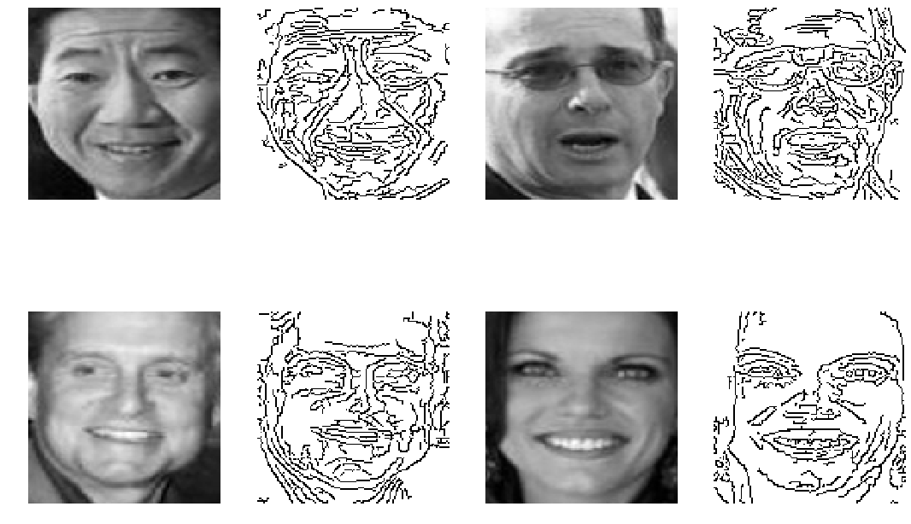
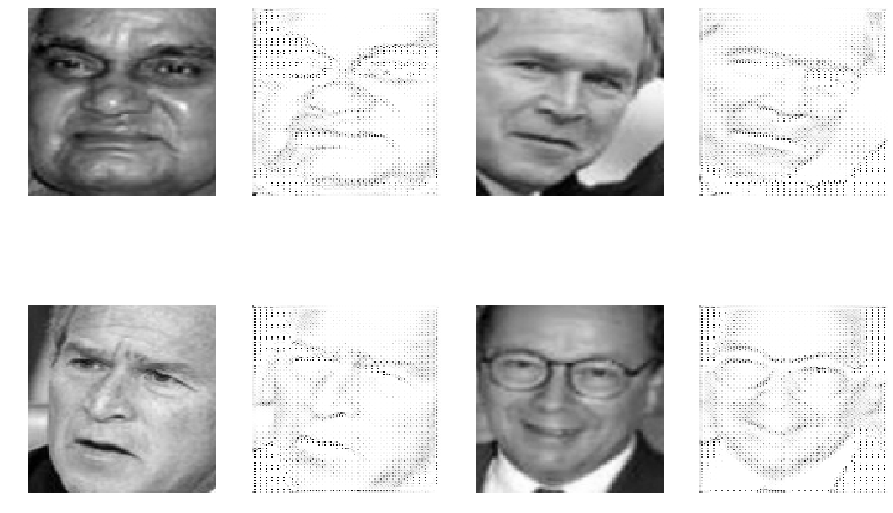
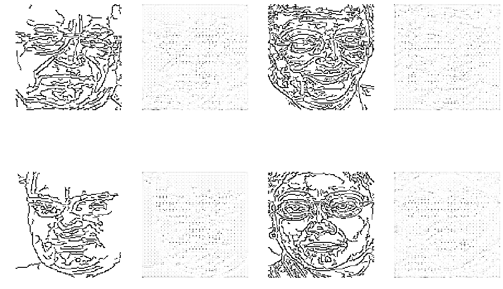

CycleGAN 구현 데이터셋 준비 1 2 3 4 5 6 7 8 9 10 11 12 13 14 15 16 17 18 19 20 21 22 import warningswarnings.simplefilter('ignore' ) import matplotlib as mplmpl.use('Agg' ) import matplotlib.pylab as pltfrom mpl_toolkits.mplot3d import Axes3Dimport seaborn as snssns.set() sns.set_style("whitegrid" ) sns.set_color_codes() import numpy as npimport scipy as spimport pandas as pdimport statsmodels.api as smimport sklearn as skfrom sklearn.datasets import fetch_lfw_peoplelfw = fetch_lfw_people(min_faces_per_person=5 , funneled=False , resize=1 , color=False , download_if_missing=True ) imgs = np.uint8(lfw.images)[:1000 ,:,:] print(imgs.shape)
(1000, 125, 94)
1 2 3 4 5 6 7 8 9 10 11 12 13 14 15 16 17 18 19 20 21 import cv2def toEdge (img) : edge = cv2.Canny(img, 30 , 70 ) return edge def resize (x, target_shape=(128 , 128 ) ) : cv2.resize(x, target_shape, interpolation=cv2.INTER_CUBIC) return cv2.resize(x, target_shape, interpolation=cv2.INTER_CUBIC) def preprocess (imgs) : resized = np.array(list(map(resize, imgs))) X = np.float32(resized)[:,:,:,np.newaxis] / 255.0 edged = np.array(list(map(toEdge, resized)))[:,:,:,np.newaxis] Y = edged / 255.0 Y = -1 * (Y - 1.0 ) return X, Y X, Y = preprocess(imgs) X.shape, Y.shape
((1000, 128, 128, 1), (1000, 128, 128, 1))
1 2 3 4 5 6 7 8 9 10 11 12 13 14 15 16 17 18 19 20 21 import matplotlib.pyplot as plt %matplotlib inline plt.figure(figsize=(15 , 11 )) plt.title("두 도메인 이미지" ) j = 1 idx = np.random.randint(len(imgs), size=4 ) for i in idx: plt.subplot(2 , 4 , j) plt.imshow(X[i].reshape(128 , 128 ), cmap="gray" ) plt.axis('off' ) j += 1 plt.subplot(2 , 4 , j) plt.imshow(Y[i].reshape(128 , 128 ), cmap="gray" ) plt.axis('off' ) j += 1 plt.tight_layout() plt.show()

instance normalization https://arxiv.org/pdf/1607.08022.pdf
1 2 3 4 import tensorflow as tfdef instance_norm (x) : return tf.contrib.layers.instance_norm(x)
Image 2 Sketch 시작하기 전에 설명의 편의를 위해 , 원본 lfw이미지를 X, 에지 성분으로 이루워져있는 이미지를 Y라고 한다.
1 2 3 4 5 from keras.layers import Input, Dropout, concatenate, MaxPooling2D,\ Lambda, Conv2D, Conv2DTranspose, ReLU, LeakyReLU from keras.models import Sequential, Modelfrom keras.optimizers import Adamimport keras.backend as K
Using TensorFlow backend.
1 2 input_shape = X.shape[1 :] input_shape
(128, 128, 1)
분류기 1 2 3 4 5 6 7 8 9 10 11 12 13 14 15 16 17 def discriminator (input_shape, fm) : model = Sequential() model.add(Conv2D(fm, 4 , strides=2 ,padding='same' , input_shape=input_shape)) model.add(LeakyReLU(alpha=0.2 )) model.add(Lambda(instance_norm)) model.add(Conv2D(fm*2 , 4 , strides=2 ,padding='same' )) model.add(LeakyReLU(alpha=0.2 )) model.add(Lambda(instance_norm)) model.add(Conv2D(fm*4 , 4 , strides=2 ,padding='same' )) model.add(LeakyReLU(alpha=0.2 )) model.add(Lambda(instance_norm)) model.add(Conv2D(fm*4 , 4 , strides=2 ,padding='same' )) model.add(LeakyReLU(alpha=0.2 )) model.add(Lambda(instance_norm)) model.add(Conv2D(1 , kernel_size=4 , strides=1 , padding='same' )) return model
1 2 X_discriminator = discriminator(input_shape, fm=64 ) Y_discriminator = discriminator(input_shape, fm=64 )
1 X_discriminator.summary()
_________________________________________________________________
Layer (type) Output Shape Param #
=================================================================
conv2d_1 (Conv2D) (None, 64, 64, 64) 1088
_________________________________________________________________
leaky_re_lu_1 (LeakyReLU) (None, 64, 64, 64) 0
_________________________________________________________________
lambda_1 (Lambda) (None, 64, 64, 64) 0
_________________________________________________________________
conv2d_2 (Conv2D) (None, 32, 32, 128) 131200
_________________________________________________________________
leaky_re_lu_2 (LeakyReLU) (None, 32, 32, 128) 0
_________________________________________________________________
lambda_2 (Lambda) (None, 32, 32, 128) 0
_________________________________________________________________
conv2d_3 (Conv2D) (None, 16, 16, 256) 524544
_________________________________________________________________
leaky_re_lu_3 (LeakyReLU) (None, 16, 16, 256) 0
_________________________________________________________________
lambda_3 (Lambda) (None, 16, 16, 256) 0
_________________________________________________________________
conv2d_4 (Conv2D) (None, 8, 8, 256) 1048832
_________________________________________________________________
leaky_re_lu_4 (LeakyReLU) (None, 8, 8, 256) 0
_________________________________________________________________
lambda_4 (Lambda) (None, 8, 8, 256) 0
_________________________________________________________________
conv2d_5 (Conv2D) (None, 8, 8, 1) 4097
=================================================================
Total params: 1,709,761
Trainable params: 1,709,761
Non-trainable params: 0
_________________________________________________________________
1 Y_discriminator.summary()
_________________________________________________________________
Layer (type) Output Shape Param #
=================================================================
conv2d_6 (Conv2D) (None, 64, 64, 64) 1088
_________________________________________________________________
leaky_re_lu_5 (LeakyReLU) (None, 64, 64, 64) 0
_________________________________________________________________
lambda_5 (Lambda) (None, 64, 64, 64) 0
_________________________________________________________________
conv2d_7 (Conv2D) (None, 32, 32, 128) 131200
_________________________________________________________________
leaky_re_lu_6 (LeakyReLU) (None, 32, 32, 128) 0
_________________________________________________________________
lambda_6 (Lambda) (None, 32, 32, 128) 0
_________________________________________________________________
conv2d_8 (Conv2D) (None, 16, 16, 256) 524544
_________________________________________________________________
leaky_re_lu_7 (LeakyReLU) (None, 16, 16, 256) 0
_________________________________________________________________
lambda_7 (Lambda) (None, 16, 16, 256) 0
_________________________________________________________________
conv2d_9 (Conv2D) (None, 8, 8, 256) 1048832
_________________________________________________________________
leaky_re_lu_8 (LeakyReLU) (None, 8, 8, 256) 0
_________________________________________________________________
lambda_8 (Lambda) (None, 8, 8, 256) 0
_________________________________________________________________
conv2d_10 (Conv2D) (None, 8, 8, 1) 4097
=================================================================
Total params: 1,709,761
Trainable params: 1,709,761
Non-trainable params: 0
_________________________________________________________________
1 2 3 4 op_d = Adam(lr=0.000045 , beta_1=0.5 , decay=0.0001 , amsgrad=True ) X_discriminator.compile(loss='binary_crossentropy' , optimizer=op_d, metrics=['accuracy' ]) Y_discriminator.compile(loss='binary_crossentropy' , optimizer=op_d, metrics=['accuracy' ])
생성기 1 2 3 4 5 6 7 8 9 10 11 12 13 14 15 16 17 18 19 20 21 22 23 24 25 26 27 28 29 30 31 32 33 34 35 36 37 38 39 40 41 42 43 44 45 46 47 48 49 50 51 52 53 54 55 56 57 58 59 60 61 62 63 64 65 66 67 68 69 70 71 72 73 74 75 76 77 def Unet (input_shape) : inputs = Input(input_shape) c1 = Conv2D(32 , kernel_size=4 , strides=1 , padding='same' )(inputs) c1 = Lambda(instance_norm)(c1) c2 = LeakyReLU(alpha=0.2 )(c1) c2 = Conv2D(64 , kernel_size=4 , strides=2 , padding='same' )(c2) c2 = Lambda(instance_norm)(c2) c3 = LeakyReLU(alpha=0.2 )(c2) c3 = Conv2D(128 , kernel_size=4 , strides=2 , padding='same' )(c3) c3 = Lambda(instance_norm)(c3) c4 = LeakyReLU(alpha=0.2 )(c3) c4 = Conv2D(256 , kernel_size=4 , strides=2 , padding='same' )(c4) c4 = Lambda(instance_norm)(c4) c5 = LeakyReLU(alpha=0.2 )(c4) c5 = Conv2D(256 , kernel_size=4 , strides=2 , padding='same' )(c5) c5 = Lambda(instance_norm)(c5) c6 = LeakyReLU(alpha=0.2 )(c5) c6 = Conv2D(256 , kernel_size=4 , strides=2 , padding='same' )(c6) c6 = Lambda(instance_norm)(c6) c7 = LeakyReLU(alpha=0.2 )(c6) c7 = Conv2D(256 , kernel_size=4 , strides=2 , padding='same' )(c7) c7 = Lambda(instance_norm)(c7) c8 = LeakyReLU(alpha=0.2 )(c7) c8 = Conv2D(256 , kernel_size=4 , strides=2 , padding='same' )(c8) c8 = Lambda(instance_norm)(c8) d1 = ReLU()(c8) d1 = Conv2DTranspose(256 , kernel_size=4 , strides=2 , padding='same' )(d1) d1 = Dropout(0.5 )(d1) d1 = Lambda(instance_norm)(d1) d1 = concatenate([d1, c7]) d2 = ReLU()(d1) d2 = Conv2DTranspose(256 , kernel_size=4 , strides=2 , padding='same' )(d2) d2 = Dropout(0.5 )(d2) d2 = Lambda(instance_norm)(d2) d2 = concatenate([d2, c6]) d3 = ReLU()(d2) d3 = Conv2DTranspose(256 , kernel_size=4 , strides=2 , padding='same' )(d3) d3 = Dropout(0.5 )(d3) d3 = Lambda(instance_norm)(d3) d3 = concatenate([d3, c5]) d4 = ReLU()(d3) d4 = Conv2DTranspose(256 , kernel_size=4 , strides=2 , padding='same' )(d4) d4 = Lambda(instance_norm)(d4) d4 = concatenate([d4, c4]) d5 = ReLU()(d4) d5 = Conv2DTranspose(128 , kernel_size=4 , strides=2 , padding='same' )(d5) d5 = Lambda(instance_norm)(d5) d5 = concatenate([d5, c3]) d6 = ReLU()(d5) d6 = Conv2DTranspose(64 , kernel_size=4 , strides=2 , padding='same' )(d6) d6 = Lambda(instance_norm)(d6) d6 = concatenate([d6, c2]) d7 = ReLU()(d6) d7 = Conv2DTranspose(32 , kernel_size=4 , strides=2 , padding='same' )(d7) d7 = Lambda(instance_norm)(d7) d7 = concatenate([d7, c1]) d8 = ReLU()(d7) outputs = Conv2DTranspose(1 , kernel_size=4 , strides=1 , padding='same' , activation='tanh' )(d8) return Model(inputs=[inputs], outputs=[outputs])
1 2 X2Y_generator = Unet(input_shape) Y2X_generator = Unet(input_shape)
__________________________________________________________________________________________________
Layer (type) Output Shape Param # Connected to
==================================================================================================
input_1 (InputLayer) (None, 128, 128, 1) 0
__________________________________________________________________________________________________
conv2d_11 (Conv2D) (None, 128, 128, 32) 544 input_1[0][0]
__________________________________________________________________________________________________
lambda_9 (Lambda) (None, 128, 128, 32) 0 conv2d_11[0][0]
__________________________________________________________________________________________________
leaky_re_lu_9 (LeakyReLU) (None, 128, 128, 32) 0 lambda_9[0][0]
__________________________________________________________________________________________________
conv2d_12 (Conv2D) (None, 64, 64, 64) 32832 leaky_re_lu_9[0][0]
__________________________________________________________________________________________________
lambda_10 (Lambda) (None, 64, 64, 64) 0 conv2d_12[0][0]
__________________________________________________________________________________________________
leaky_re_lu_10 (LeakyReLU) (None, 64, 64, 64) 0 lambda_10[0][0]
__________________________________________________________________________________________________
conv2d_13 (Conv2D) (None, 32, 32, 128) 131200 leaky_re_lu_10[0][0]
__________________________________________________________________________________________________
lambda_11 (Lambda) (None, 32, 32, 128) 0 conv2d_13[0][0]
__________________________________________________________________________________________________
leaky_re_lu_11 (LeakyReLU) (None, 32, 32, 128) 0 lambda_11[0][0]
__________________________________________________________________________________________________
conv2d_14 (Conv2D) (None, 16, 16, 256) 524544 leaky_re_lu_11[0][0]
__________________________________________________________________________________________________
lambda_12 (Lambda) (None, 16, 16, 256) 0 conv2d_14[0][0]
__________________________________________________________________________________________________
leaky_re_lu_12 (LeakyReLU) (None, 16, 16, 256) 0 lambda_12[0][0]
__________________________________________________________________________________________________
conv2d_15 (Conv2D) (None, 8, 8, 256) 1048832 leaky_re_lu_12[0][0]
__________________________________________________________________________________________________
lambda_13 (Lambda) (None, 8, 8, 256) 0 conv2d_15[0][0]
__________________________________________________________________________________________________
leaky_re_lu_13 (LeakyReLU) (None, 8, 8, 256) 0 lambda_13[0][0]
__________________________________________________________________________________________________
conv2d_16 (Conv2D) (None, 4, 4, 256) 1048832 leaky_re_lu_13[0][0]
__________________________________________________________________________________________________
lambda_14 (Lambda) (None, 4, 4, 256) 0 conv2d_16[0][0]
__________________________________________________________________________________________________
leaky_re_lu_14 (LeakyReLU) (None, 4, 4, 256) 0 lambda_14[0][0]
__________________________________________________________________________________________________
conv2d_17 (Conv2D) (None, 2, 2, 256) 1048832 leaky_re_lu_14[0][0]
__________________________________________________________________________________________________
lambda_15 (Lambda) (None, 2, 2, 256) 0 conv2d_17[0][0]
__________________________________________________________________________________________________
leaky_re_lu_15 (LeakyReLU) (None, 2, 2, 256) 0 lambda_15[0][0]
__________________________________________________________________________________________________
conv2d_18 (Conv2D) (None, 1, 1, 256) 1048832 leaky_re_lu_15[0][0]
__________________________________________________________________________________________________
lambda_16 (Lambda) (None, 1, 1, 256) 0 conv2d_18[0][0]
__________________________________________________________________________________________________
re_lu_1 (ReLU) (None, 1, 1, 256) 0 lambda_16[0][0]
__________________________________________________________________________________________________
conv2d_transpose_1 (Conv2DTrans (None, 2, 2, 256) 1048832 re_lu_1[0][0]
__________________________________________________________________________________________________
dropout_1 (Dropout) (None, 2, 2, 256) 0 conv2d_transpose_1[0][0]
__________________________________________________________________________________________________
lambda_17 (Lambda) (None, 2, 2, 256) 0 dropout_1[0][0]
__________________________________________________________________________________________________
concatenate_1 (Concatenate) (None, 2, 2, 512) 0 lambda_17[0][0]
lambda_15[0][0]
__________________________________________________________________________________________________
re_lu_2 (ReLU) (None, 2, 2, 512) 0 concatenate_1[0][0]
__________________________________________________________________________________________________
conv2d_transpose_2 (Conv2DTrans (None, 4, 4, 256) 2097408 re_lu_2[0][0]
__________________________________________________________________________________________________
dropout_2 (Dropout) (None, 4, 4, 256) 0 conv2d_transpose_2[0][0]
__________________________________________________________________________________________________
lambda_18 (Lambda) (None, 4, 4, 256) 0 dropout_2[0][0]
__________________________________________________________________________________________________
concatenate_2 (Concatenate) (None, 4, 4, 512) 0 lambda_18[0][0]
lambda_14[0][0]
__________________________________________________________________________________________________
re_lu_3 (ReLU) (None, 4, 4, 512) 0 concatenate_2[0][0]
__________________________________________________________________________________________________
conv2d_transpose_3 (Conv2DTrans (None, 8, 8, 256) 2097408 re_lu_3[0][0]
__________________________________________________________________________________________________
dropout_3 (Dropout) (None, 8, 8, 256) 0 conv2d_transpose_3[0][0]
__________________________________________________________________________________________________
lambda_19 (Lambda) (None, 8, 8, 256) 0 dropout_3[0][0]
__________________________________________________________________________________________________
concatenate_3 (Concatenate) (None, 8, 8, 512) 0 lambda_19[0][0]
lambda_13[0][0]
__________________________________________________________________________________________________
re_lu_4 (ReLU) (None, 8, 8, 512) 0 concatenate_3[0][0]
__________________________________________________________________________________________________
conv2d_transpose_4 (Conv2DTrans (None, 16, 16, 256) 2097408 re_lu_4[0][0]
__________________________________________________________________________________________________
lambda_20 (Lambda) (None, 16, 16, 256) 0 conv2d_transpose_4[0][0]
__________________________________________________________________________________________________
concatenate_4 (Concatenate) (None, 16, 16, 512) 0 lambda_20[0][0]
lambda_12[0][0]
__________________________________________________________________________________________________
re_lu_5 (ReLU) (None, 16, 16, 512) 0 concatenate_4[0][0]
__________________________________________________________________________________________________
conv2d_transpose_5 (Conv2DTrans (None, 32, 32, 128) 1048704 re_lu_5[0][0]
__________________________________________________________________________________________________
lambda_21 (Lambda) (None, 32, 32, 128) 0 conv2d_transpose_5[0][0]
__________________________________________________________________________________________________
concatenate_5 (Concatenate) (None, 32, 32, 256) 0 lambda_21[0][0]
lambda_11[0][0]
__________________________________________________________________________________________________
re_lu_6 (ReLU) (None, 32, 32, 256) 0 concatenate_5[0][0]
__________________________________________________________________________________________________
conv2d_transpose_6 (Conv2DTrans (None, 64, 64, 64) 262208 re_lu_6[0][0]
__________________________________________________________________________________________________
lambda_22 (Lambda) (None, 64, 64, 64) 0 conv2d_transpose_6[0][0]
__________________________________________________________________________________________________
concatenate_6 (Concatenate) (None, 64, 64, 128) 0 lambda_22[0][0]
lambda_10[0][0]
__________________________________________________________________________________________________
re_lu_7 (ReLU) (None, 64, 64, 128) 0 concatenate_6[0][0]
__________________________________________________________________________________________________
conv2d_transpose_7 (Conv2DTrans (None, 128, 128, 32) 65568 re_lu_7[0][0]
__________________________________________________________________________________________________
lambda_23 (Lambda) (None, 128, 128, 32) 0 conv2d_transpose_7[0][0]
__________________________________________________________________________________________________
concatenate_7 (Concatenate) (None, 128, 128, 64) 0 lambda_23[0][0]
lambda_9[0][0]
__________________________________________________________________________________________________
re_lu_8 (ReLU) (None, 128, 128, 64) 0 concatenate_7[0][0]
__________________________________________________________________________________________________
conv2d_transpose_8 (Conv2DTrans (None, 128, 128, 1) 1025 re_lu_8[0][0]
==================================================================================================
Total params: 13,603,009
Trainable params: 13,603,009
Non-trainable params: 0
__________________________________________________________________________________________________
__________________________________________________________________________________________________
Layer (type) Output Shape Param # Connected to
==================================================================================================
input_2 (InputLayer) (None, 128, 128, 1) 0
__________________________________________________________________________________________________
conv2d_19 (Conv2D) (None, 128, 128, 32) 544 input_2[0][0]
__________________________________________________________________________________________________
lambda_24 (Lambda) (None, 128, 128, 32) 0 conv2d_19[0][0]
__________________________________________________________________________________________________
leaky_re_lu_16 (LeakyReLU) (None, 128, 128, 32) 0 lambda_24[0][0]
__________________________________________________________________________________________________
conv2d_20 (Conv2D) (None, 64, 64, 64) 32832 leaky_re_lu_16[0][0]
__________________________________________________________________________________________________
lambda_25 (Lambda) (None, 64, 64, 64) 0 conv2d_20[0][0]
__________________________________________________________________________________________________
leaky_re_lu_17 (LeakyReLU) (None, 64, 64, 64) 0 lambda_25[0][0]
__________________________________________________________________________________________________
conv2d_21 (Conv2D) (None, 32, 32, 128) 131200 leaky_re_lu_17[0][0]
__________________________________________________________________________________________________
lambda_26 (Lambda) (None, 32, 32, 128) 0 conv2d_21[0][0]
__________________________________________________________________________________________________
leaky_re_lu_18 (LeakyReLU) (None, 32, 32, 128) 0 lambda_26[0][0]
__________________________________________________________________________________________________
conv2d_22 (Conv2D) (None, 16, 16, 256) 524544 leaky_re_lu_18[0][0]
__________________________________________________________________________________________________
lambda_27 (Lambda) (None, 16, 16, 256) 0 conv2d_22[0][0]
__________________________________________________________________________________________________
leaky_re_lu_19 (LeakyReLU) (None, 16, 16, 256) 0 lambda_27[0][0]
__________________________________________________________________________________________________
conv2d_23 (Conv2D) (None, 8, 8, 256) 1048832 leaky_re_lu_19[0][0]
__________________________________________________________________________________________________
lambda_28 (Lambda) (None, 8, 8, 256) 0 conv2d_23[0][0]
__________________________________________________________________________________________________
leaky_re_lu_20 (LeakyReLU) (None, 8, 8, 256) 0 lambda_28[0][0]
__________________________________________________________________________________________________
conv2d_24 (Conv2D) (None, 4, 4, 256) 1048832 leaky_re_lu_20[0][0]
__________________________________________________________________________________________________
lambda_29 (Lambda) (None, 4, 4, 256) 0 conv2d_24[0][0]
__________________________________________________________________________________________________
leaky_re_lu_21 (LeakyReLU) (None, 4, 4, 256) 0 lambda_29[0][0]
__________________________________________________________________________________________________
conv2d_25 (Conv2D) (None, 2, 2, 256) 1048832 leaky_re_lu_21[0][0]
__________________________________________________________________________________________________
lambda_30 (Lambda) (None, 2, 2, 256) 0 conv2d_25[0][0]
__________________________________________________________________________________________________
leaky_re_lu_22 (LeakyReLU) (None, 2, 2, 256) 0 lambda_30[0][0]
__________________________________________________________________________________________________
conv2d_26 (Conv2D) (None, 1, 1, 256) 1048832 leaky_re_lu_22[0][0]
__________________________________________________________________________________________________
lambda_31 (Lambda) (None, 1, 1, 256) 0 conv2d_26[0][0]
__________________________________________________________________________________________________
re_lu_9 (ReLU) (None, 1, 1, 256) 0 lambda_31[0][0]
__________________________________________________________________________________________________
conv2d_transpose_9 (Conv2DTrans (None, 2, 2, 256) 1048832 re_lu_9[0][0]
__________________________________________________________________________________________________
dropout_4 (Dropout) (None, 2, 2, 256) 0 conv2d_transpose_9[0][0]
__________________________________________________________________________________________________
lambda_32 (Lambda) (None, 2, 2, 256) 0 dropout_4[0][0]
__________________________________________________________________________________________________
concatenate_8 (Concatenate) (None, 2, 2, 512) 0 lambda_32[0][0]
lambda_30[0][0]
__________________________________________________________________________________________________
re_lu_10 (ReLU) (None, 2, 2, 512) 0 concatenate_8[0][0]
__________________________________________________________________________________________________
conv2d_transpose_10 (Conv2DTran (None, 4, 4, 256) 2097408 re_lu_10[0][0]
__________________________________________________________________________________________________
dropout_5 (Dropout) (None, 4, 4, 256) 0 conv2d_transpose_10[0][0]
__________________________________________________________________________________________________
lambda_33 (Lambda) (None, 4, 4, 256) 0 dropout_5[0][0]
__________________________________________________________________________________________________
concatenate_9 (Concatenate) (None, 4, 4, 512) 0 lambda_33[0][0]
lambda_29[0][0]
__________________________________________________________________________________________________
re_lu_11 (ReLU) (None, 4, 4, 512) 0 concatenate_9[0][0]
__________________________________________________________________________________________________
conv2d_transpose_11 (Conv2DTran (None, 8, 8, 256) 2097408 re_lu_11[0][0]
__________________________________________________________________________________________________
dropout_6 (Dropout) (None, 8, 8, 256) 0 conv2d_transpose_11[0][0]
__________________________________________________________________________________________________
lambda_34 (Lambda) (None, 8, 8, 256) 0 dropout_6[0][0]
__________________________________________________________________________________________________
concatenate_10 (Concatenate) (None, 8, 8, 512) 0 lambda_34[0][0]
lambda_28[0][0]
__________________________________________________________________________________________________
re_lu_12 (ReLU) (None, 8, 8, 512) 0 concatenate_10[0][0]
__________________________________________________________________________________________________
conv2d_transpose_12 (Conv2DTran (None, 16, 16, 256) 2097408 re_lu_12[0][0]
__________________________________________________________________________________________________
lambda_35 (Lambda) (None, 16, 16, 256) 0 conv2d_transpose_12[0][0]
__________________________________________________________________________________________________
concatenate_11 (Concatenate) (None, 16, 16, 512) 0 lambda_35[0][0]
lambda_27[0][0]
__________________________________________________________________________________________________
re_lu_13 (ReLU) (None, 16, 16, 512) 0 concatenate_11[0][0]
__________________________________________________________________________________________________
conv2d_transpose_13 (Conv2DTran (None, 32, 32, 128) 1048704 re_lu_13[0][0]
__________________________________________________________________________________________________
lambda_36 (Lambda) (None, 32, 32, 128) 0 conv2d_transpose_13[0][0]
__________________________________________________________________________________________________
concatenate_12 (Concatenate) (None, 32, 32, 256) 0 lambda_36[0][0]
lambda_26[0][0]
__________________________________________________________________________________________________
re_lu_14 (ReLU) (None, 32, 32, 256) 0 concatenate_12[0][0]
__________________________________________________________________________________________________
conv2d_transpose_14 (Conv2DTran (None, 64, 64, 64) 262208 re_lu_14[0][0]
__________________________________________________________________________________________________
lambda_37 (Lambda) (None, 64, 64, 64) 0 conv2d_transpose_14[0][0]
__________________________________________________________________________________________________
concatenate_13 (Concatenate) (None, 64, 64, 128) 0 lambda_37[0][0]
lambda_25[0][0]
__________________________________________________________________________________________________
re_lu_15 (ReLU) (None, 64, 64, 128) 0 concatenate_13[0][0]
__________________________________________________________________________________________________
conv2d_transpose_15 (Conv2DTran (None, 128, 128, 32) 65568 re_lu_15[0][0]
__________________________________________________________________________________________________
lambda_38 (Lambda) (None, 128, 128, 32) 0 conv2d_transpose_15[0][0]
__________________________________________________________________________________________________
concatenate_14 (Concatenate) (None, 128, 128, 64) 0 lambda_38[0][0]
lambda_24[0][0]
__________________________________________________________________________________________________
re_lu_16 (ReLU) (None, 128, 128, 64) 0 concatenate_14[0][0]
__________________________________________________________________________________________________
conv2d_transpose_16 (Conv2DTran (None, 128, 128, 1) 1025 re_lu_16[0][0]
==================================================================================================
Total params: 13,603,009
Trainable params: 13,603,009
Non-trainable params: 0
__________________________________________________________________________________________________
훈련하는 Model 1 2 3 4 5 6 7 8 9 10 11 12 13 14 15 16 17 18 19 20 21 22 23 X_input = Input(shape=input_shape) Y_input = Input(shape=input_shape) fake_Y = X2Y_generator(X_input) fake_X = Y2X_generator(Y_input) recon_X = Y2X_generator(fake_Y) recon_Y = X2Y_generator(fake_X) X_discriminator.trainable = False Y_discriminator.trainable = False X2Y_out = Y_discriminator(fake_Y) Y2X_out = X_discriminator(fake_X) combined = Model(inputs=[X_input, Y_input],outputs=[X2Y_out, Y2X_out, recon_X, recon_Y]) lambda_cycle = 10.0 op_g = Adam(lr=0.0001 , beta_1=0.5 , decay=0.0001 , amsgrad=True ) combined.compile(loss=['binary_crossentropy' ,'binary_crossentropy' ,'mae' ,'mae' ], loss_weights=[1 , 1 , lambda_cycle, lambda_cycle], optimizer=op_g)
__________________________________________________________________________________________________
Layer (type) Output Shape Param # Connected to
==================================================================================================
input_3 (InputLayer) (None, 128, 128, 1) 0
__________________________________________________________________________________________________
input_4 (InputLayer) (None, 128, 128, 1) 0
__________________________________________________________________________________________________
model_1 (Model) (None, 128, 128, 1) 13603009 input_3[0][0]
model_2[1][0]
__________________________________________________________________________________________________
model_2 (Model) (None, 128, 128, 1) 13603009 input_4[0][0]
model_1[1][0]
__________________________________________________________________________________________________
sequential_2 (Sequential) (None, 8, 8, 1) 1709761 model_1[1][0]
__________________________________________________________________________________________________
sequential_1 (Sequential) (None, 8, 8, 1) 1709761 model_2[1][0]
==================================================================================================
Total params: 30,625,540
Trainable params: 27,206,018
Non-trainable params: 3,419,522
__________________________________________________________________________________________________
Training 1 2 3 4 5 6 7 8 9 10 11 12 13 14 15 16 17 18 19 20 21 22 23 24 25 26 27 28 29 30 31 32 33 34 35 36 37 38 39 def train (epochs, print_step=10 ) : history = [] for epoch in range(epochs): idx = np.random.choice(np.arange(X.shape[0 ]), size=128 , replace=False ) X_ = X[idx] Y_ = Y[idx] for i in range(X_.shape[0 ] // batch_size): x = X_[batch_size * i : batch_size * (i + 1 )] y = Y_[batch_size * i : batch_size * (i + 1 )] fake_y = X2Y_generator.predict(x) fake_x = Y2X_generator.predict(y) true_label = np.ones((x.shape[0 ], 8 , 8 , 1 )) true_label += np.random.normal(size=true_label.shape) / 10. fake_label = np.zeros((x.shape[0 ], 8 , 8 , 1 )) fake_label += np.random.normal(size=true_label.shape) / 10. X_dis_loss = X_discriminator.train_on_batch(np.concatenate((x, fake_x)), np.concatenate((true_label, fake_label))) Y_dis_loss = Y_discriminator.train_on_batch(np.concatenate((y, fake_y)), np.concatenate((true_label, fake_label))) gan_loss = combined.train_on_batch([x, y], [true_label, true_label, x, y]) record = (epoch, X_dis_loss[0 ], Y_dis_loss[0 ], gan_loss[0 ]) history.append(record) if epoch % print_step == 0 : print("%5d X-D loss: %.5f, Y-D loss: %.5f, G loss: %.5f" % record) return history
1 2 3 %%time warnings.simplefilter('ignore' ) history500 = train(500 , 100 )
0 X-D loss: 5.88499, Y-D loss: 6.36636, G loss: 22.45337
100 X-D loss: 5.36150, Y-D loss: 6.83485, G loss: 22.69240
200 X-D loss: 5.31353, Y-D loss: 6.66604, G loss: 21.85092
300 X-D loss: 4.92537, Y-D loss: 6.43923, G loss: 23.07759
400 X-D loss: 4.97540, Y-D loss: 6.81467, G loss: 22.25138
CPU times: user 41min 8s, sys: 24min 20s, total: 1h 5min 29s
Wall time: 1h 17min 56s
1 2 3 4 5 6 7 8 9 10 11 12 13 14 15 16 17 18 19 20 21 22 23 24 %matplotlib inline plt.figure(figsize=(15 , 11 )) plt.title("두 도메인 이미지" ) j = 1 idx = np.random.randint(len(imgs), size=4 ) Y_hat = X2Y_generator.predict(X[idx]) for i in range(4 ): plt.subplot(2 , 4 , j) plt.imshow(X[idx[i]].reshape(128 , 128 ), cmap="gray" ) plt.axis('off' ) j += 1 plt.subplot(2 , 4 , j) plt.imshow(Y_hat[i].reshape(128 , 128 ), cmap="gray" ) plt.axis('off' ) j += 1 plt.tight_layout() plt.show()

1 2 3 4 5 6 7 8 9 10 11 12 13 14 15 16 17 18 19 20 21 22 plt.figure(figsize=(15 , 11 )) plt.title("두 도메인 이미지" ) j = 1 idx = np.random.randint(len(imgs), size=4 ) X_hat = X2Y_generator.predict(Y[idx]) for i in range(4 ): plt.subplot(2 , 4 , j) plt.imshow(Y[idx[i]].reshape(128 , 128 ), cmap="gray" ) plt.axis('off' ) j += 1 plt.subplot(2 , 4 , j) plt.imshow(X_hat[i].reshape(128 , 128 ), cmap="gray" ) plt.axis('off' ) j += 1 plt.tight_layout() plt.show()
